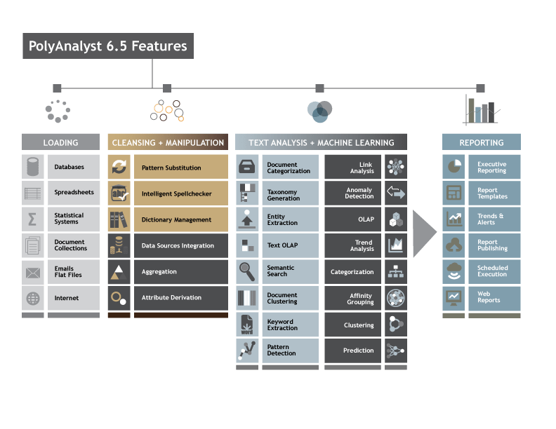

Web Researcher/Data Entry Clerk, Heat Intelligence
Activities involved in include:
Collect relevant data efficiently from various websites to enhance quality and depth of organization insights, streamline processes, and help management make informed decisions gathered from the web
Performed data preprocessing on collected data by handling missing values and data cleaning on the web data before entering them into the system to ensure 99% accuracy
Extract valuable insights from data obtained from various online sites achieving 98% accuracy
Data Scientist, 10Alytics
Activities involved in include:
Spearheaded the creation of dynamic, data-driven dashboards using Tableau and Power BI, resulting in a 20% increase in sales over a three-month period
Leveraged Power BI and Tableau to extract, transform, and load (ETL) data from various sources, reducing data integration time by 25%
Utilized supervised learning models (classification model) to predict diabetes in patients, achieving an accuracy rate of 92% and providing valuable insights for healthcare decision-making
Implemented unsupervised learning techniques (KMeans) for data clustering, grouping sales data into distinct segments, leading to insights for the marketing department and enhancing decision-making
Developed a computer vision model using python and OpenCV library to detect face, mouth, and eyes achieving 90% accuracy, Hand Landmarker model and Pose Detection using MediaPipe library with 100%
precision
Developed interactive dashboards addressing business challenges, identifying trends and purchasing behaviours among customers, resulting in data-driven sales decisions and a 20% improvement in targeted
marketing
Conducted thorough data preprocessing, including cleaning, analysis, and forecasting, utilizing advanced Excel features like pivot tables, pivot charts, COUNTIF, VLOOKUP, and INDEX MATCH, resulting
in actionable insights and a 25% increase in revenue generation
Collaborated with cross-functional teams on complex business problems, fostering innovation and improving decision-making processes
Interpreted findings and trends to evaluate and automate the creation of sales reports, providing essential support to executives and reducing report creation time by 35%
Data Scientist/Project Lead, Seacrest Technology Limited

Activities Involved in include:
Delivered an initial prototype (AI model) to the client utilizing text and data analytics, and ML algorithms to cluster data and identify trends, patterns, and anomalies, obtaining insights for operational
and procedural improvement
Performed data loading, pre-processing, data-driven analysis, analyst-driven analysis, and visualization using PolyAnalyst 6.5 on both structured and unstructured data, reporting the outcome in a dashboard
Performed web-scraping from social sites and visualized the results on the Kenyan map utilizing Google Maps APIs
Created appropriate documentation that allows stakeholders to understand the steps of the model and duplicate or replicate the model development if necessary
Data Officer (Sub-contactor - MMC Asafo), Safaricom PLC

Activities involved in include:
Ensured 100% success rate for the KYC project (Project Thibitisha) by implementing rigorous verification processes
Conducted collection and verification of M-Pesa and dealers’ documents achieving a 98% completion rate to ensure the clients submitted all required documents
Analyzed, scanned, and accurately uploaded the collected documents to Safaricom’s dealer’s portal, maintaining a 99% accuracy rate compared to the checklist
Performed data entry and cleanup procedures with correctness, achieving 95% accuracy rate, and compiled a detailed report for task documentation
Formulated data into tables and reports (using Excel VLOOKUP), resulting in a 90% improvement in project progress tracking and transparency
Successfully matched, merged, and archived documents, ensuring compliance with management-provided guidelines for document organization
Other Experiences
ICT Intern, Amref Health Africa
Activities involved in inlcude:
Achieved 100% effectiveness in maintaining and configuring of ICT infrastructure, strictly adhering to organizational policies and procedures
Installed and configured users on Microsoft Dynamics and Sun Systems, troubleshooting problems promptly to maintain a 94% user satisfaction
Performed configuration and troubleshooting of Microsoft Outlook versions (2007, 2010, and 2013), migrating users to Microsoft Outlook365 with a data loss minimization rate of 99% during the migration
process
Configured switches and routers, successfully troubleshooting network issues and providing solutions, resulting in 98% of users having uninterrupted internet access through activation of inactive
Played a key role in the installation of midwifery e-module content both on mobile and web applications, training users in Kitui, Migori, and Kakamega counties. This initiative positively impacted the
performance of health facilities, enhancing maternal services to local communities
Executed the installation of Operating Systems (Windows 10), Microsoft Office 2013, and McAfee antivirus 2018, to ensuring 100% user protection from malware
Set up conference calls using Cisco phones (model 3306), contributing to seamless communication experience for all involved parties
System Support Officer, Prosperity Solutions Int. Ltd.
Activities involved in inlcude:
Conducted thorough performance evaluation of existing systems, identifying and implementing customizations that improved data performance by 15%
Played a key role in troubleshooting Health Application Information Systems (HAIS) application issues, achieving a 90% resolution rate within established timelines
Delivered comprehensive assistance to system users of insurance companies, responding to queries and issues with 95% satisfaction rate
Executed software installations on user computers, ensuring a 100% success rate in deployment and configuration
Provided technical support during the resolution of production problems, contributing to a 90% reduction in system downtime
Supported customers in a technical help desk environment, focusing on first-call problem resolution and achieving an 75% resolution rate with the initial call